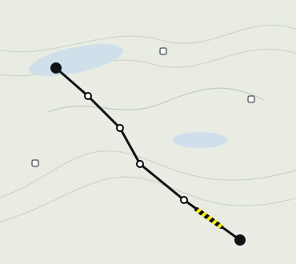

Leg

© Kartverket · Lantmäteriet- 13 kmdistance
- +260 mascent
- ~4 h 30walking
Night
Arrive by 18:00 · logbook: names and membership numbers.
On this section
- Bridge before Tjäktja washed outnote · 6 Aug · ford knee-deepford
- Waterstreams every 2–3 km
- Surface8 km of boardwalk, 5 km of rock
Weather
August seasonal normal: +6…+14 °C, rain every third day. The forecast appears 10 days before you set off.